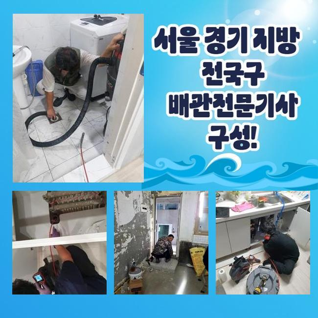
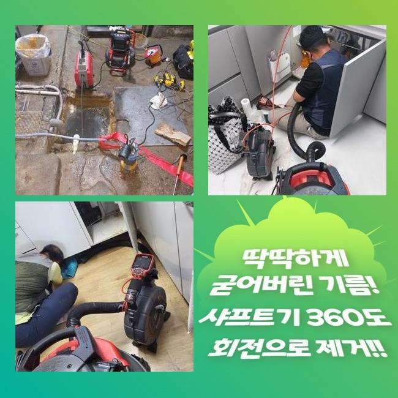
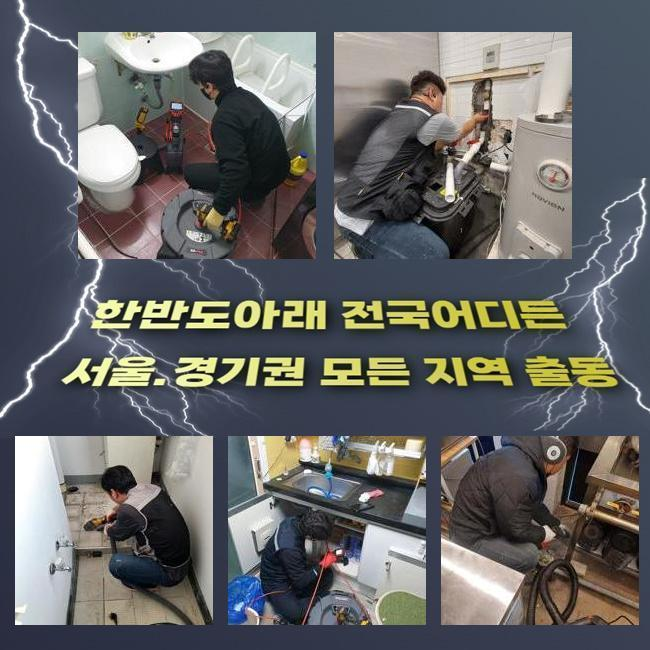
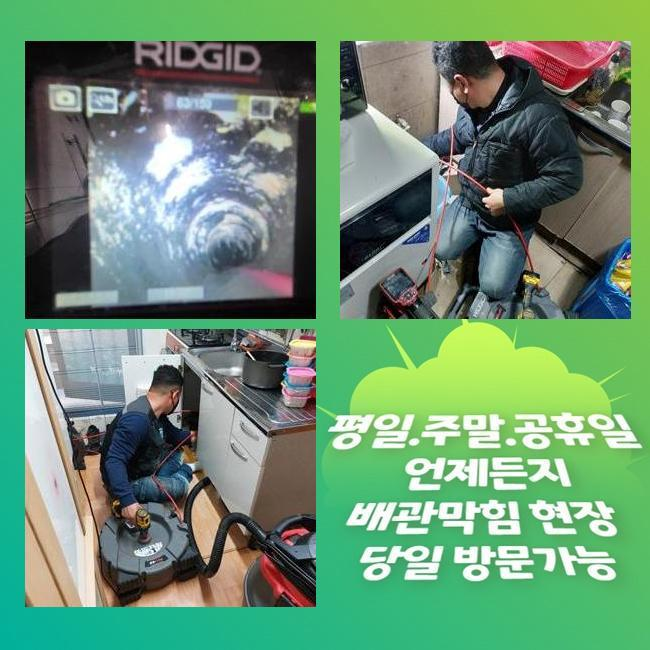
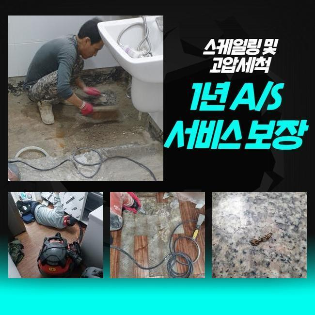
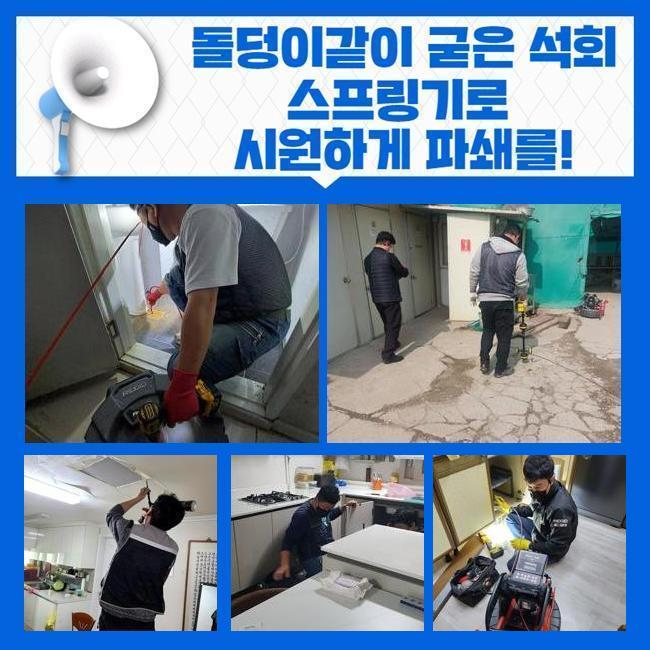
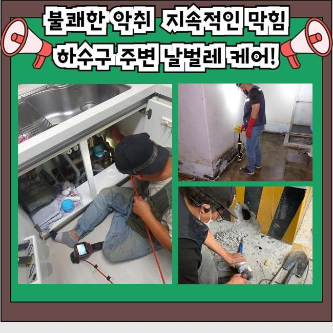

🏠 오금동싱크대배수관막힘 수리동 고압세척비용 배관막힘누수
용인 싱크대막힘 전문 시공 후기

📋 작업 개요
- 위치: 용인
- 서비스 유형: 싱크대막힘, 하수구막힘, 배관막힘, 누수수리, 배관청소, 고압세척
- 작업 일시: 2024. 11. 3. 15:37
- 업체명: 하수구수사대 (010-5615-2118)
🔍 문제 상황
오금동싱크대배수관막힘 수리동 고압세척비용 배관막힘누수
갑작스럽게 일어난 하수구막힘으로 인해서 불편함을 느끼고계신가요
배관을쓰는 빈도높은 장소일수록 막힘현상이 일어날확률이 농후합니다
갑자기 발생된경우라면 불편할수밖에 없는데요
막히는문제가 일어나는일은 여러방면으로 발생하는까닭에 혼자서직접 처리하고자 무리하지말고 업체와함께 신속히 처리할것을 추천드릴게요
며칠전에 해당현상으로 인하여 문의주신 고객분에게 다녀왔어요
어떤이유로 인해서 문제가발현되고 어떤방법을 통하여 대처하는게 좋은지 설명해볼게요
유선으로 간단하게 현장상황에 대해 들었으나 장소로방문해 파악하는것이 중요한부분이죠
장소를이동해 오염물을 체크해보니 주방만의 문제들이 아니었으므로 바깥쪽에있는 하수구로 위치를옮겼죠

🔎 원인 분석
💡 전문가 진단: 정밀 진단 장비를 사용하여 슬러지의 고착 여부를 판명하고 타격/세척 작업을 실시했습니다.
주방배수구에서 흘려보내어진 음식잔해가 하수관내에서 퇴적되고 기름기이물들이 뭉치게되어 배수를 막아버리는것이죠
화장실배수구는 머리칼과 샤워용품찌꺼기가 쌓이면서 막히기도하고 고착이되면서 잔해물질이 퇴적되며 딱딱한 이물질로 변하게되죠
다세대로 이루어진 상가의 하수구는 전부연결된 상태이므로 바깥에서 오염되기도해요
이물질이쌓이면 물의흐름을 막게되고 그상태그대로 부패도 진행되므로 악취가발현되고 벌레도꼬이죠
욕실쪽이나 주방쪽에서 깔끔히청소를 진행하여 관리해주었지만 악취증세가 해결되지않는것을 경험하셨을겁니다
이러한현상들은 하수배관안에서 발생하는문제죠
어떤곳이라도 배관안은 사람의 육안만을 이용해서 살피기란 어렵습니다
살펴볼수있도록 해주는장비인 내시경기기를 통해서 하수도속을 확인하고있죠
캄캄하고 내부깊히 위치하는곳도 살펴볼수있으므로 어떤지점에서 문제를보이는지 내시경화면을 통해서 파악이가능하다는 요점을 가지고있는 기기에요
저희들은 의뢰자께서 문제가나타난 싱크대배관속에 배관촬영기를 집어넣어 근원적인원인을 찾도록하고있죠

🔧 작업 과정
예측대로 수많은 이물질때문에 하수구내부속이 오염되어있음을 확인할수있었어요
이러한상황을 고객님도 촬영기화면을 통하여 문제의 발생이유를 알수가있죠
계속해서 쌓이게되면 각종 잔해물질이 부패되기에 하수구세척을 진행해주었어요
석션기기로 간단하게 잔여물제거를 진행해주는데요
찌꺼기와 고인물을 빨아올려 작업할공간에 대해서 확보해주는데요
공간확보가 완료되면 한번더 내시경을투입해 정확하게 문제지점을 체크해주죠
나름대로 관리를했다고 말씀주셨지만 확인해보니 오염물때문에 막히게된것으로 살펴볼수있었네요
이물소거후 현장상황을 종결짓지않죠
말씀드렸었지만 상가건물같은 곳의 배관구조는 한쪽으로 연결되어진 구조이기에 이물제거가 완료되었어도 엮여있는배관에서 증상이있는지 체크해보는 과정들을 거쳐야만 하겠습니다
다량의 물을쏟아 원활한배수가 진행되는가 체크도하는데요
물빠짐테스트도 마치게된다면 배수상태에 대하여 함께살핀뒤 마무리합니다
평상시관리를 잘했다고생각하여 좋지않은냄새가 풍길때도 하수구막힘인것을 인지하지못했다고 하셨죠
하수구망을 활용하여 예방조치를 시도해도 완벽하게 이물질들을 없앨수는없죠
그렇기에 약간이나마 배수상태가 더딘것으로물이빠지는것이 더뎌졌다는 생각이들면 신속하게 업체를통해 맡기셔서 처리하는것이 올바른 해결책이랍니다
고객의대다수는 배수가더디거나 악취가나도 잠깐이면 해결될거라고 생각하십니다
이런식으로 내버려둔다면 하수구는 점점약해지며 시간이흐를수록 배관변형이 발생할수도있으며 하수구에손상이 야기될수있어요


✅ 작업 완료
방임할수록 해결하고자 비용적인측면과 시간적인면에서 소요해야하므로 징조를보이게되면 즉시확인하여 해결해야합니다
간단한예방과 해결법을통해 최소화시킬수있기에 하수구와관련해 고민하고계시다면 편안한마음으로 연락주셔도됩니다
성심성의껏 상담해드리고 분명히 수립계획을 공개하여 걱정하시지않도록 만족하실만한 결과물들로 보여드릴게요
어떤곳이든 한시간안으로 도착할수있으니 연락주셔서 질의해보세요




⚠️ 베란다 누수 및 방수 관리 방법
- ✅ 비가 많이 올 때 창틀 주변이나 아래층 천장에 얼룩이 생기는지 정기적으로 확인해 보세요.
- ✅ 우수관 주변 실리콘 마감이 들뜨거나 깨진 틈새가 있는지 손상 여부를 수시로 체크하세요.
- ✅ 베란다 바닥 타일의 줄눈(메지)이 소실되면 그 틈으로 물이 침투하여 누수가 유발됩니다.
- ✅ 누수 의심 증상 발견 시 방치하면 아래층 손실이 커지므로 즉시 전문가의 진단을 받으십시오.
💡 핵심 정리
- 확실한 장비 작업(내시경 점검 및 샤프트 스케일링)으로 원인을 뿌리 뽑습니다.
- 작업 후 1년 이내에 동일한 부위 재발 시 100% 무상 A/S 서비스를 보장합니다.
- 서울 · 경기 · 인천 전 지역에 24시간 언제든 긴급 출동할 수 있도록 항시 대기 중입니다.
❓ 자주 묻는 질문 (FAQ)
🚨 용인 싱크대막힘 문제로 고민이신가요?
정확한 원인 진단과 확실한 시공으로 재발 없는 해결을 약속드립니다.
24시간 긴급 출동 | 서울 · 경기 · 인천 전지역 | 1년 내 재발 시 무상 A/S